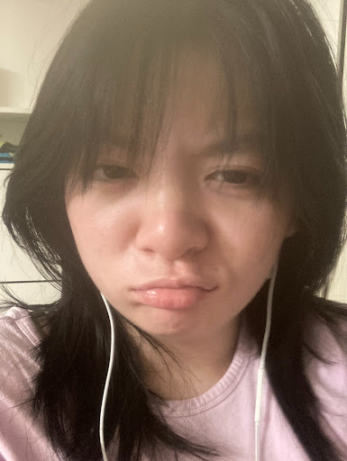

Hello! Welcome to Kristie Ngo's portfolio, where creativity merges with the skills of web design and graphic design to create works that help YOU! This journey began due to El Camino, allowing me to gain the skills inn order to display expressive pieces that emphasize the visuals for you! It's meant cheap amd artistic, as it's considered student made. However, I believe you all can trust in me with the way I coded things here! I'll ensure this whole process is interesting, easy, understandable, and fun for you!
About Me
Hello! I'm Kristie Ngo. I love anything art related as it's so unique to see how visuals display different tones that words can't explain. When it comes to designing, I'll be sure to prove myself and provide the best result that appeals to all! I've dealt with clients within my classes, and I'm going to ensure that the process will be smooth sailing as possible for now on.
My Favorite Website
My favorite website is Youtube. Although I don't have a preference, usually social media websites that allow me to interact with others from afar tend to get my attention. I love and value my friends, but I also love watching all sorts of entertainment too. It's all meant to be fun in the end and seeing all sorts of media for free on Youtube is always a great pleasure.
Contact Me
If you'd like to ever request a work to produced by me, digital or not, feel welcome to contact me with the navigation bar above! I want to continue producing works that share the beauty that I see. Contacting me with questions and communicating about applying for a work is always welcome! I hope I can truly provide the best experience for all!
Introduction


My name is Kristie, a student currently enrolled within El Camino Highschool. I love watching shows and anything related to storytelling or creativity! For years now, I've been taking a bunch of design and computer classes. Something is so special about creating something through a machine! Regardless of what it is, I love expressing myself and the various methods used to display it.
I always thought creating things were definitely FASCINATING! With the immense use of color and design always caught my attention. The most special thing about art is how eye-catching it is. Within my middle school years, I have constantly took creative classes. I'm currently in my second year of learning design, whether it's web or graphic. I hope I can use these skills to help express myself and you!
Interests and Inspirations
We all have to start somewhere when it comes to creativity. Tons of inspiration from shows, movies, and art pieces is what truly sparks an idea. Its truly a great starting point! Deriving from others into their own unique things. With the way movies combine visuals and storytelling, it truly makes me inspired to work on my own skills to express a story on my terms.
Want to learn about me? Seek the navigation bar above to learn more! I enjoy all sorts of things and I understand if many want a thorough understanding on the kind of person they're wanting to work with. So, I'll try to be as open as I can with my interests. I often like all sorts of shows, movies, food, designs, and more. Here's a short excerpt below of my favorites page!
A list of my favorite shows or movies that inspire me!
- Link Click
- Across the Spiderverse
- Gachiakuta
- Blue Period
- Sk8 the Infinity

We all have favorite foods, right? Food is a universal connection and thing we can all enjoy. If you want to learn more about me through my food tastes, I present you this opportunity! Here's some of my favorite foods if you want to know my preference!
- Dim Sum
- Fried Chicken
- Garlic Bread
- Pasta